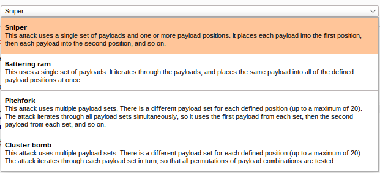
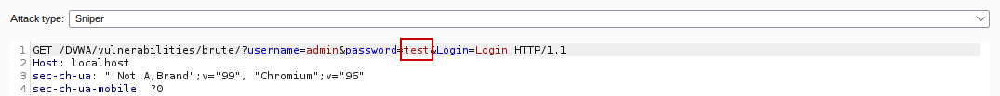

Burp Suite
Here is the URL to the offical Burp Suite page: https://portswigger.net/burp
Table of contents
General Info + Tool Purpose
To Contents Table
Burp Suite is a excellent multipurpose tool, it’s main usage is a proxy interception tool, sitting
between your device and the target domain and intercepting HTTP requests and response. In addition
to this it can also do many things such as spider (discover) directories in a website to being used
as a brute forcing tool. There is also a premium/paid version of brute force that allows the
usage of extensions!
In this guide I will look at using Burp Suite as an intercept tool and going
over the common features Burp Suite has to offer (including intercepting and also brute forcing).
Interception consists of interrupting the transfer of the HTTP message between the host and target.
When interrupted we then have the opportunity to alter the contents of the HTTP message (we can edit
or remove values in the message, for example change the password fields and then continue to send it off).
How to open the tool:
To Contents TableOne way (and the simplest way) to open the tool is to click on the Burp Suite icon on the left hand side on the bar.
Alternatively it is also possible to open up Burp Suite through the console if you are missing the shortcut. The command can be found in the text file on the desktop.
java -jar /home/dmu/BurpSuiteCommunity/burpsuite_community.jar
From either way, a popup will appear. Just select next and then start Burp.
The dashboard will then appear.
Before I go over what each tab does, I'll first go over the interception feature of Burp Suite
Intercepting with Burp Suite
To Contents Table
Burp Suite allows you to either intercept with your browser or with its inbuilt browser. Previously, I used to
use my own browser (this required a lot of configuration to be used properly) but I found the inbuilt
browser to be much better.
For the purpose of demonstration I have covered setting up Burp Suite for external browsers, however
I recommend using the inbuilt browser within Burp Suite because its much easier to use, literally no
configuration required.
Through the inbuilt browser:
To Contents TableStarting from the Burp Suite dashboard, move your mouse to the tabs to the top. Select either the ‘proxy’ tab:
Then on either page select the open browser button – either from the left or topside within the tab
Upon selecting open browser, the Burp Suite browser opens up.
We can test it works by going to localhost and seeing if Burp Suite gets populated by intercepts. Upon entering localhost come to proxy, successfully got an intercept
Through an external browser:
To Contents TableIf you want Burp Suite to run through your own browser you need to do a lot more configurations. I also found the external browser doesn’t always work, so I recommend only looking at this if you're interested in the process.
Each Tab analysed:
To Contents TableI will now go over the most commonly used tabs
Dashboard
To Contents TableThis is what the dashboard looks like when split into four groups
1 - Tasks: The task menu allows you to define and use background tasks that will run as you use Burp Suite. I will ignore it as the default mode (live passive crawl – which logs the pages visited) will be enough
2 - Event Log: The event log tab states what Burp Suite is doing. In the event log below you can see I attempted to access the BBC website.
3 - Issue Activity: Issue activity is part of the Burp Suites premium features. This section would list all the vulnerabilities found using Burp Suites automated scanners, and once found would filter and rank the vulnerabilities by severity and showcase the biggest threats.
4 - Advisory: Below issue activity is the advisory tab. After double clicking the issue in the issue activity tab, this tab provides information about the vulnerability in question.
Target
To Contents Table
In the target tab the site map can be found. This contains the structure of the websites visited, highlighting
all directories, files and pages found. The HTTP response and request can also be found in the middle.
Here is the sitemap from logging into the DVWA website. The sitemap feature 'spiders' the site (in the premium version)
and shows the path of all pages found.
Notice how some files are greyed out. Burp Suite know they exist, it just hasn't accessed it

The inspector tab on the right simplifies the HTTP request and outlines key information a user may be interested in.
For example from
the DVWA login page request it organizes the cookies into its own tab, identifying the php session ID (which can
be used in a attack for session high jacking) and the sites security level.
Later on when I showcase brute
forcing the site the password and username fields can also be seen.
Burp Suite also has the ability to add a target in (and out of scope), only showing the relevant addresses. By
right clicking the host you can add it to the scope list (as well as among other things like compare it
to the sitemap of another host). In doing so Burp Suite will then only log whats within the scope. This helps reduce clutter.
The address entered into scope can then be seen in the scope tab. You can also enter scope through this page as well.
And just as how you can put targets into scope, you can also explicitly ignore certain targets as well by putting it in
‘exclude from scope’.
The issue definitions tab is used in conjunction with the issue advisory section in the dashboard. This is where the relevant information is stored.
Proxy
To Contents TableConsidered the most important tab, due to being able to seen intercepted requests.
When a HTTP request is intercepted, it can be found in the proxy area (in the intercept tab). HTTP requests are
sent whenever anything is done in the browser – such as changing pages, clicking on a link, submitting a form,
entering log in information etc.
Here is an example of me using my proxy browser to access DVWA:
The forward button can be clicked to push the request through, drop to delete it. You can also write in it

By changing the fields in the HTTP request form you can also change the response you would normally get. For
example you could change your session id to someone else’s and you may log in as them. We will use this page later to
brute force the login.
In this page you can also right click the HTTP request to see a set of options:
The most important functions right now are the send to x options. This allows you to copy and paste the
HTTP request into the other tabs.
By moving the request into the intruder tab you can attempt to brute
force pages for example.
The HTTP history has the history of the requests. Knows if it’s a request you edited earlier etc. useful if you
need to look back at a request you dealt with previously instead of having to try and force it again.
There is also a tab called, Websocket history, which records history of traffic between web socket and app.
Will ignore it in this guide as not used often. This is what can be found on the page if you go onto it:
There is also an options tab, containing the rules for interceptions and more. It allows you to select proxy listeners
and filer client request, as well as server response.
Can also be configured to automatically modify certain parts
of the response. Also has other settings that can be played with – for now I will leave it alone to prevent
confusion, it is worth a look though.

Intruder
To Contents Table
The intruder tab is where the brute force based activities occur. This is what it looks like in full:
The intruder tab mostly consists of getting the request from the proxy tab, highlight the areas where the payloads should be placed (normally the password and username field) and when done uses a wordlist and cycles it into the payload field and try out all possible combinations. The successful response can normally be identified by having a different length size compared to the failed response (e.g. failed response = 200 length, successful response = 212 length). I will present an example of using the intruder page later.
Four types of attacks can be executed - Sniper, Battering ram, Pitchfork and Cluster bomb

The sniper attack is the most common type of attack, this is often used when you know what the username is but don’t
know the password so you use a password wordlist (which is a very large file containing many commonly used passwords)
and enter every individual password with the username.
The cluster bomb is the second most common attack, its usually used to brute force a websites login page if the
username and password is unknown. It enables the use of two payloads at once instead of a single one, enabling the use
of a password wordlist and username wordlist.
The payload page is where the payload is loaded in. you can either load in a file containing a list of
usernames and passwords (or other fields) or manually type it in. Depending on what attack you select,
additional payload fields may appear (I.E. a box for payload 1, a box for payload 2).
The resource pool tab allows you to group tasks together and make them share a quota of resources.
Each pool can then also be configured so they can have delays, run requests concurrently etc.
This page isn’t often used unless you are doing wide scale tasks and as such I would ignore it for now.
Repeater
To Contents TableThe repeater tag is a page that has two panels – the request and response panel.
Its intended use is to be used as a sort of side by side comparison for a HTTP requests and its response.
When a HTTP request is sent its response can be seen on the right, however the HTTP request remains.
This allow you to quickly make changes to the HTTP request to try and get a new response.
It is commonly used in activities such as SQL injection or just to quickly change field content (quickly enter passwords).
I will present an example of using the repeater page later.
Example of using the Intercept tab:
To Contents TableIn order to use the intruder tab, you must first get a HTTP request containing fields you want to brute force. In this example I will use DVWA bruteforce page. You can try it yourself by following the steps In the services page on this site.
Getting the HTTP Requst
First I opened the Burp Suite inbuilt browser and turned off the intercept option (this was so I didn’t intercept any HTTP requests as I got to the page).
I then went to the DVWA site and onto the Brute Force section.
I then entered a random password into the password field. I knew there was a user called admin so I
entered admin into the user field. I then went back into Burp Suite to re-enable the intercept option,
and then pressed the login button on the DVWA page.
Back to the Burp Suite application, a HTTP request was then intercepted and can be seen in the proxy tab (if this
request cannot be seen just press the ‘forward’ button to push through some requests).
Eventually, a HTTP request containing the username and password fields can be seen, with what I entered.
This can also be seen in the inspectors tab.
I then right clicked the page and selected ‘send to intruder’.
The HTTP request was then moved to intruder.

HTTP Request in Intruder
For this attack, I only want to Brute Force the password, so I made sure the attack type was set to sniper.
I then pressed the clear button to delete all brute force parameters
I then selected the password field (containing the test data I entered earlier ‘test’) and selected
the add button to re add the parameters to the password field.

I then switched to the payloads page and loaded up a text file called ‘passwords.txt’. This was a short password file
I made (in practice you will use a significantly larger password file, such as rockyou.txt, but for now I will use
this to decrease the size of the result).
Once loaded in the payload field became populated with the passwords.
I then pressed the start attack button in the top right and the Brute Forcing process began.
If you have the free version the brute forcing is a lot slower, but as I used a small wordlist the process
finished very quickly.
End of Brute Forcing
With the brute forcing complete, I looked at the response of the first password (by double clicking it and
clicking on the response tab) and scrolled down to see the password and username field.
Within it I saw a failed
response, so I deemed any request with the same length as that payload (4532) would be an incorrect password
and disregarded them.
From spending more time looking at the length of the brute forcing, I noticed one of the payloads (the payload
that used ‘password’ as the password) had a larger length then the rest, meaning it gave a different response to the usual fail.
You can also click on the length tab to reorder by descending or
ascending lengths.
I went into the ‘password’ payload to look at the response and success message. From
looking at the HTTP content, a success message was found.
And to confirm it worked, I entered the credentials into the website normally, and I managed to log in
Example of using the Repeater tab:
To Contents TableGetting the HTTP Requst
First I got the HTTP request for the login page again (see intruder example for how to get it).
This time I used a
different method to get the request – as I had already been to the page it could be found in the sitemap.
I then right clicked and selected ‘send to repeater’, moving it to the repeater tab.
Using Repeater
The password I used previously was ‘test’. I changed the password to ‘abc’ to
go and see what response I would get, and pressed send.
As expected, it was a failure. However the HTTP request on the side still remains so
I tried again but this time with the password as ‘password’, and sent it off again.
This time a different, successful response can be seen.
Burp Suite 'help page'
To Contents Table
As Burp Suite is not a traditional terminal tool, it does not have a man or help page like nmap does. It does however
have extensive documentation, and as it’s been used by many people if you have an issue the solution is likely available on Google.
Here is a link to the full documentation page of Burp Suite.
https://portswigger.net/burp/documentation/contents
Alternative to Burp Suite
To Contents TableBurp Suite itself is considered to be a one of a kind jewel, however there is another tool on par with Burp Suite. That is OWASP ZAP.
OWASP ZAP is like a free version of Burp Suite Premium except it can do much more. One feature is ZAP has the ability to completely attack a website by going into ‘attack mode’, finding vulnerabilities and reporting back on them (and sometimes exploit them).
The main reason why I didn’t cover ZAP in this guide is because of the lack of documentation/guides.
If you get stuck with Burp Suite, you can easily find the answer out online because many people use it
and your issue would probably been answered in the past.
ZAP on the other hand would be more difficult and more akin to
a treasure hunt, and would most likely need to bugfix it yourself, which is an issue if you are just Starting
to learn the tool. As ZAP also automates some part of the ‘exploitation process’, and so you may not fully understand
how to exploit a vulnerability properly which may negatively impact the learning process.
I do recommend having a look at it at a later stage once you are more familiar with exploiting vulnerabilities.